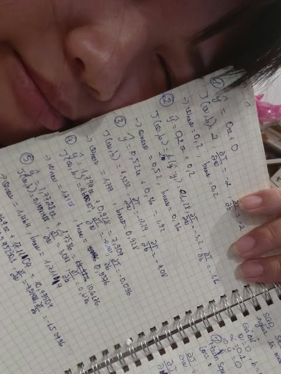
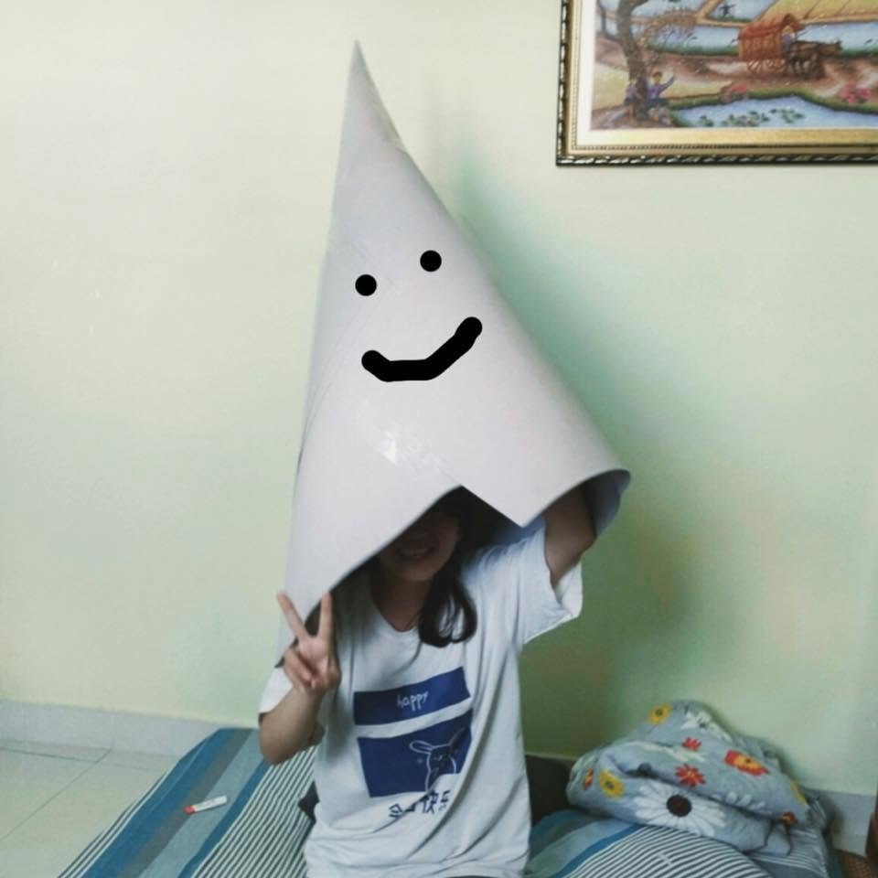
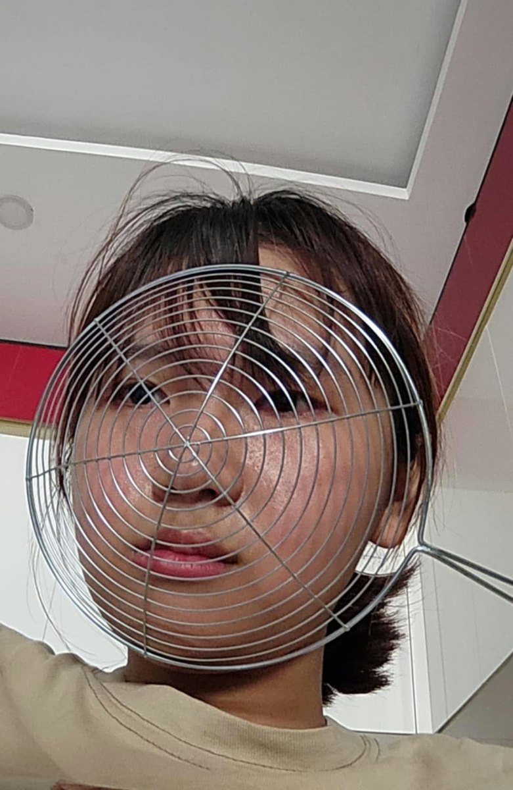
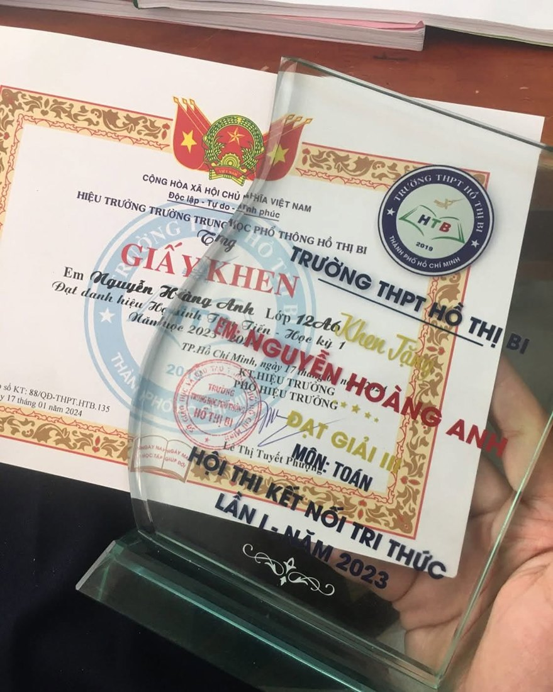
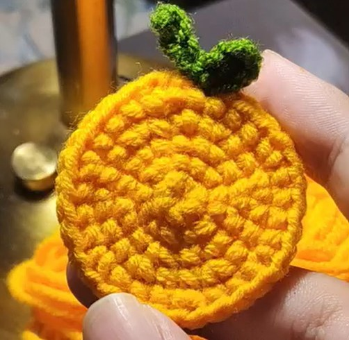
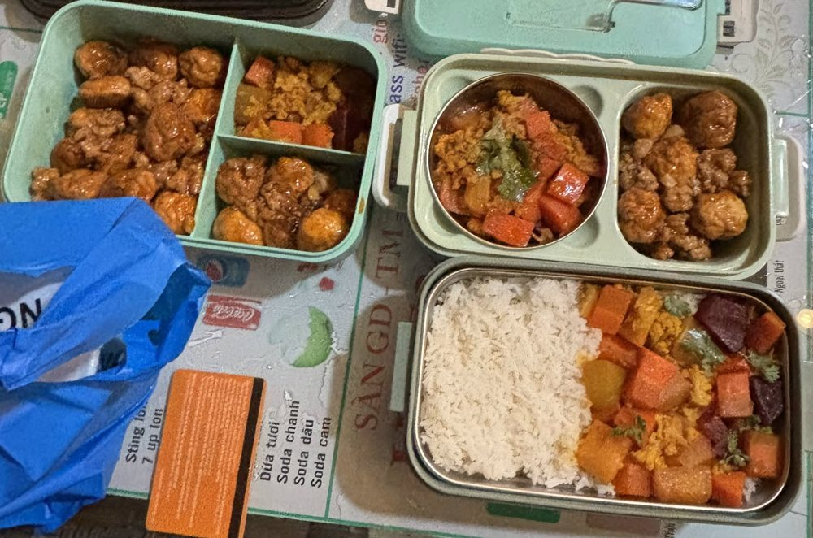
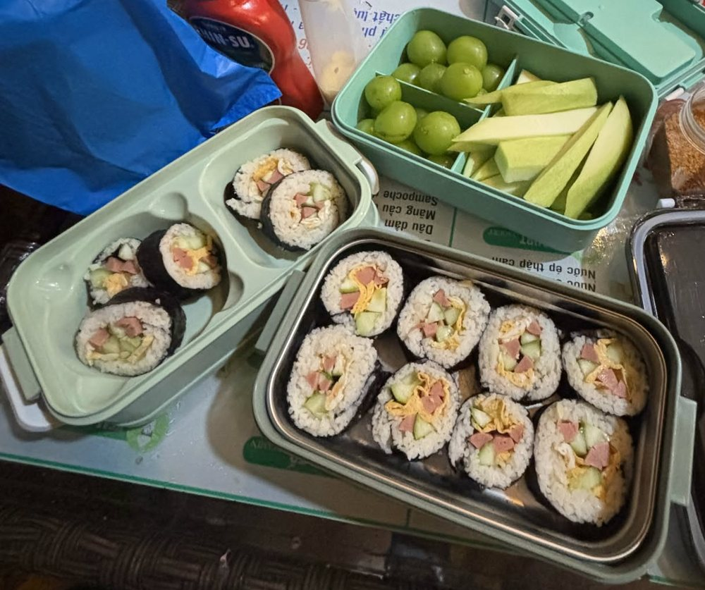
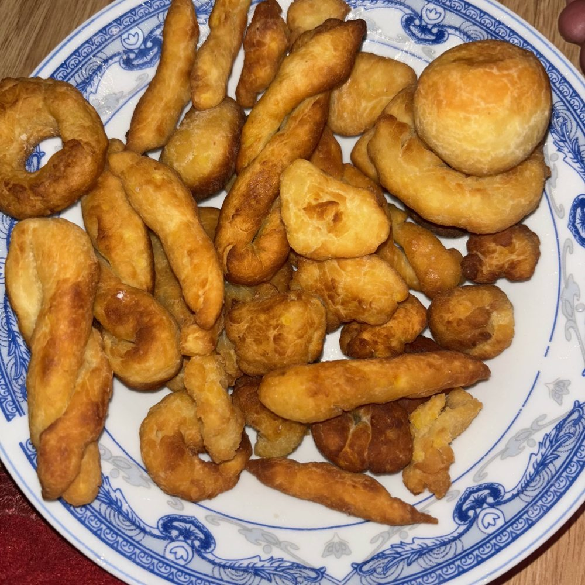

Lúc rảnh
Chơi game, làm toán, và thỉnh thoảng làm bánh.
Từ dòng code đến sản phẩm hữu ích. Mình là Nguyễn Hoàng Anh (Hoanhh), sinh viên Công nghệ thông tin K24 tại Đại học Giao thông vận tải TP.HCM. Mình xây dựng web, đang học NLP và Transformer, và làm content, dựng video.
Xem dự án
Sinh viên Công nghệ thông tin đam mê xây dựng web và tìm hiểu xử lý ngôn ngữ tự nhiên (NLP).
Mình có nền tảng về lập trình hướng đối tượng (OOP) với Java và Python, làm giao diện bằng HTML và CSS, và xây dựng API với FastAPI. Hiện mình đang học NLP và tìm hiểu kiến trúc Transformer, nền tảng của các mô hình ngôn ngữ hiện đại.
Mình muốn kết hợp kỹ năng làm web với AI để tạo ra những sản phẩm hữu ích và dễ sử dụng.



Ngoài code, mình thích hát, thích bơi và thỉnh thoảng làm bánh. Đây là vài điều về mình.
Ba từ mình tự mô tả


Chơi game, làm toán, và thỉnh thoảng làm bánh.
Mình biết bơi ếch và bơi ngửa, nên rất thích đi du lịch những nơi có biển.

Dạo gần đây mình hay xem “phim gấu”, thể loại phim hoạt hình hài hước kể chuyện trên YouTube, và xem rất nhiều.
Mình thuyết trình khá tự tin trước đám đông và rất thích điều đó, vì sau này mình muốn trở thành giảng viên.

Mình được giải Ba môn Toán của trường.
Mình tự cắt tóc, bên ngắn bên dài kkkk.

Mình còn biết móc len, làm những món đồ nhỏ xinh như quả cam hay bông hoa.
Thỉnh thoảng mình tự vào bếp: làm bánh, chuẩn bị cơm hộp, cuộn kimbap, hay nấu một tô mì với tôm, ngô và nấm.




Ngoài code, mình làm content và dựng video. Mình tự làm content cho kênh TikTok Đóm Đi Đêm (@domdidemne), nội dung giải trí, có video đạt hơn 500 nghìn lượt xem. Mình dựng video bằng CapCut: ghép nhiều lớp hình, chữ và nhạc nền, chỉnh tốc độ từng đoạn.
Kênh Đóm Đi Đêm tính đến 01/11/2026: hơn 1.200 người theo dõi, hơn 83 nghìn lượt thích.
Kênh mình làm và edit video


Trước đây mình thích làm một mình. Từ khi làm việc cùng các bạn trong nhóm, mình muốn làm chung nhiều hơn để học hỏi thêm.
Trong nhóm mình thường code, kiểm thử sản phẩm, vẽ ERD và thuyết trình.
Điều mình đang cải thiện: hay đến hạn mới nộp bài nhóm.
Hiểu được bản chất của vấn đề, và làm sản phẩm từ những thứ mình yêu thích.
Môn học yêu thích nhất của mình là Machine Learning và Deep Learning.
Từ dòng code đầu tiên đến những gì mình muốn làm tiếp theo.
Kéo, vuốt hoặc dùng phím ← → để xem từng dự án. Bấm “Chi tiết” để đọc phần mình đã làm.

Phân tích thiết kế · Nhóm 2
Hệ thống cho thư viện có ba vai trò: độc giả, thủ thư, quản trị viên. Gồm đăng ký và cấp thẻ, mượn – trả – gia hạn, xử lý mất sách, mở khóa thẻ có phê duyệt hai cấp và báo cáo tồn kho.
 Ảnh minh họa
Ảnh minh họaCông nghệ phần mềm · Trưởng nhóm
Hệ thống quản lý điểm danh sinh viên, làm việc nhóm theo quy trình phần mềm: có tài liệu đặc tả yêu cầu và thiết kế, tài liệu kiểm thử.
 Ảnh minh họa
Ảnh minh họaAn toàn thông tin · Cá nhân
Công cụ web giấu tin trong ảnh và âm thanh, kèm chức năng phát hiện ảnh có chứa tin giấu. Thuật toán LSB được tự cài đặt, thông điệp được mã hóa trước khi giấu.
 Ảnh minh họa
Ảnh minh họaNghiên cứu khoa học · Đang thực hiện
SemEval-2027 là hội thảo quốc tế lần thứ 21 về Semantic Evaluation (đánh giá ngữ nghĩa), tổ chức cùng ACL 2027 tại Kyoto, Nhật Bản, ngày 17–22/8/2027. Mình đang làm Task 8 (StereoQueerEval): nhận diện định kiến và ngôn từ thù ghét nhắm vào cộng đồng LGBTQIA+ trong bình luận. Dự án đang trong quá trình thực hiện.

Bài cuối kỳ Python · Nhóm
Bài cuối kỳ gồm xử lý dữ liệu, tạo cơ sở dữ liệu và bài toán hồi quy tuyến tính, có hướng dẫn cài đặt và chạy.

Bài tập Python · Cá nhân
Tập hợp bài tập theo từng buổi học Python, kèm dữ liệu mẫu dạng CSV và JSON.
Đang học NLP, Transformers và LLM trên Hugging Face; nền tảng lập trình hướng đối tượng với Java và Python.
Liên hệ với mình qua email, Zalo, Facebook hoặc xem mã nguồn trên GitHub.
Môn Phân tích thiết kế hệ thống · Nhóm 2 (6 thành viên)
Hệ thống cho thư viện có ba vai trò: độc giả, thủ thư, quản trị viên. Gồm đăng ký và cấp thẻ, mượn – trả – gia hạn, xử lý mất sách, mở khóa thẻ có phê duyệt hai cấp và báo cáo tồn kho.
Ảnh minh họaMôn Công nghệ phần mềm · Nhóm 4
Hệ thống quản lý điểm danh sinh viên, làm việc nhóm theo quy trình phần mềm: có tài liệu đặc tả yêu cầu và thiết kế, tài liệu kiểm thử.
Ảnh minh họaMôn An toàn thông tin · Cá nhân
Công cụ web giấu tin trong ảnh và âm thanh, kèm chức năng phát hiện ảnh có chứa tin giấu. Thuật toán LSB được tự cài đặt, thông điệp được mã hóa trước khi giấu.
Ảnh minh họaNghiên cứu khoa học của trường · Cuộc thi SemEval 2027 · Đang thực hiện
SemEval-2027 là hội thảo quốc tế lần thứ 21 về Semantic Evaluation (đánh giá ngữ nghĩa), tổ chức cùng ACL 2027 tại Kyoto, Nhật Bản, ngày 17–22/8/2027. Mình đang làm Task 8 (StereoQueerEval): nhận diện định kiến và ngôn từ thù ghét nhắm vào cộng đồng LGBTQIA+ trong bình luận. Dự án đang trong quá trình thực hiện.
Bài cuối kỳ môn Python · Làm việc nhóm
Bài cuối kỳ gồm xử lý dữ liệu, tạo cơ sở dữ liệu và bài toán hồi quy tuyến tính, có hướng dẫn cài đặt và chạy.
Môn Ngôn ngữ lập trình Python · Cá nhân
Tập hợp bài tập theo từng buổi học Python, kèm dữ liệu mẫu dạng CSV và JSON.